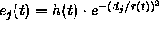
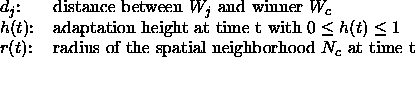
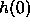
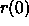

Next: The Kohonen Update
Up: SOM Implementation in
Previous: SOM Implementation in
SOM training in SNNS can be performed with the learning function
Kohonen. It can be selected from the list of learning functions
in the control panel. Five parameters have to be passed to this
learning function:
- Adaptation Height (Learning Height)
The initial adaptation height

can vary between 0 and 1. It determines
the overall adaptation strength.
- Adaptation Radius (Learning Radius)
The initial adaptation radius

is the radius of the neighborhood
of the winning unit. All units within this radius are adapted. Values
should range between 1 and the size of the map.
- Decrease Factor mult_H
The adaptation height decreases monotonically after the presentation
of every learning pattern. This decrease is controlled by the decrease
factor mult_H:

- Decrease Factor mult_R
The adaptation radius also decreases monotonically after the
presentation of every learning pattern. This second decrease is
controlled by the decrease factor mult_R:

- Horizontal size
Since the internal representation of a network doesn't allow to
determine the 2-dimensional layout of the grid, the horizontal size in
units must be provided for the learning function. It is the same
value as used for the creation of the network.
Note: After each completed training the parameters adaption
height and adaption radius are updated in the control panel to reflect
their new values. So when training is started anew, it resumes at the
point where it was stopped last. Both mult_H and mult_R should be in
the range  . A value of 1 consequently keeps the adaption values
at a constant level.
. A value of 1 consequently keeps the adaption values
at a constant level.
Niels.Mache@informatik.uni-stuttgart.de
Tue Nov 28 10:30:44 MET 1995